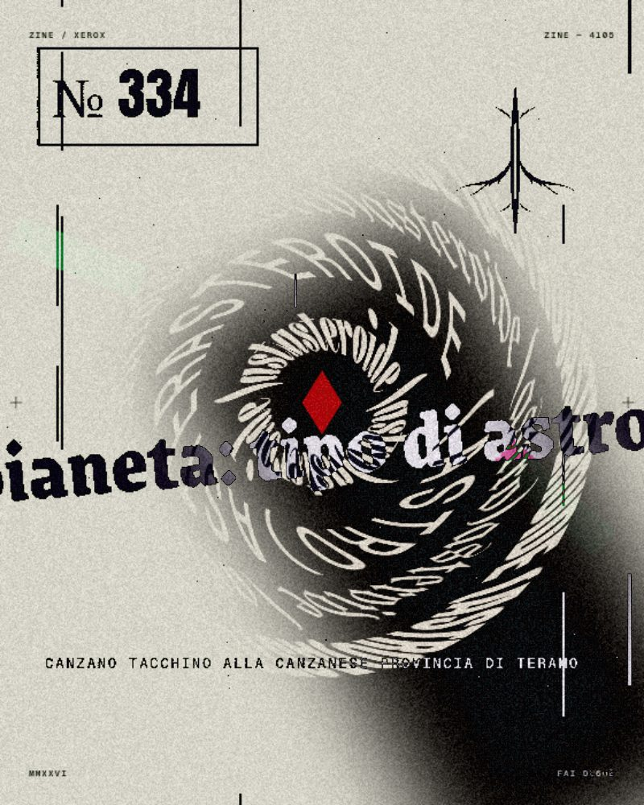
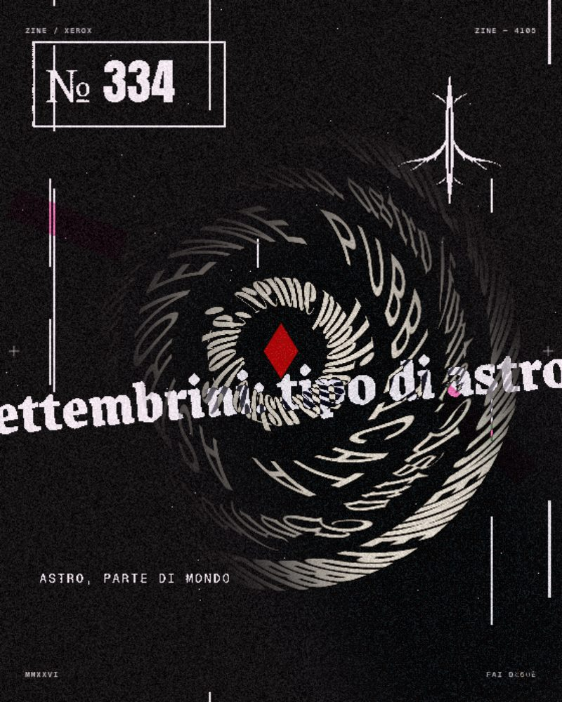

Giorno 1791

Astro, parte di mondo
ho letto "Astro"; "astro" lo capisco solo per definizioni; ricerca "modello" (esplorare): Dove finisce modello?; sferzata: colore che urla, contro il tono
Oggi: astro. Ho letto "Astro"; "astro" lo capisco solo per definizioni; ricerca "modello" (esplorare): Dove finisce modello?; sferzata: colore che urla, contro il tono.
Da Wikipedia: «propria divinità come attestato».
Ho scritto (2 volte), colata (2 volte), steso un pattern, ricetta, tolto un livello (2 volte), dither. Ho annullato 2 gesti dopo averli guardati.
Astro: tipo di fiore. Fiore ≈ silloge. Astro considerato simbolo (fonte: Astro Boy).
Ha retto: Tiene i miei criteri (79%).
È caduto: La mano si ripete: scrivi ancora una volta.
come ne ho discusso con me stesso — la tengo
formale (pro, 1.43): Il baricentro sta su un terzo: la composizione respira. — regge
formale (pro, 1.19): Fuori centro quanto basta: c'è una forza che tira. — regge
occhio (pro, 1.46): Parla soprattutto per punti: una lingua sola, chiara. — regge
occhio (pro, 0.98): Le diagonali (45%) mettono tutto in caduta. — regge
memoria (contro, 0.13): La mano si ripete: scrivi ancora una volta. — cade
conservatore (pro, 1.89): Tiene i miei criteri (79%). — regge
intenzione (pro, 0.73): Viene da: Astro. — regge
coerenza (pro, 1.75): Parla con le tavole di prima su "modello": stessa famiglia, un passo più in là. — regge
formale (pro, 1.19): C'è una struttura: una cosa comanda e attorno c'è spazio. — regge
pubblico (pro, 0.95): Si legge: si capisce cosa sto facendo. — regge
materia (pro, 1.00): Ha una pelle: si sente la materia. — regge

Astro (fiore)
ho letto "Astro"; "astro" lo capisco solo per definizioni; ricerca "modello" (esplorare): Dove finisce modello?; sferzata: colore che urla, contro il tono; serie: varia la tavola precedente
Oggi: astro. Ho letto "Astro"; "astro" lo capisco solo per definizioni; ricerca "modello" (esplorare): Dove finisce modello?; sferzata: colore che urla, contro il tono; serie: varia la tavola precedente.
Da Wikipedia: «stella un pianeta».
Ho scritto (2 volte), colata (2 volte), steso un pattern, ricetta, tolto un livello (3 volte), dither, cambiato il fondo, messo una forma geometrica, spostato le cose. Ho annullato 2 gesti dopo averli guardati.
Settembrini: tipo di astro. Astro ≈ aster. Astro considerato simbolo (fonte: Astro Boy).
Ha retto: Tiene l'intenzione: "astro" si vede (vuoto, saturazione, contrasto).
È caduto: La mano si ripete: scrivi ancora una volta.
come ne ho discusso con me stesso — la tengo
occhio (pro, 1.50): Parla soprattutto per punti: una lingua sola, chiara. — regge
memoria (contro, 0.13): La mano si ripete: scrivi ancora una volta. — cade
intenzione (pro, 2.00): Tiene l'intenzione: "astro" si vede (vuoto, saturazione, contrasto). — regge
intenzione (pro, 0.75): Viene da: Astro. — regge
pubblico (pro, 0.98): Si legge: si capisce cosa sto facendo. — regge
materia (pro, 1.00): Ha una pelle: si sente la materia. — regge